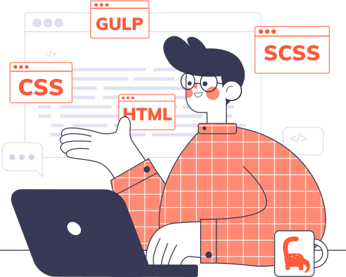

@@include("../partials/doc-navbar.html")
@@include("../partials/doc-sidebar.html")
Snippets in Coach Theme
Bootstrap code snippets are small templates that make it easier to enter repeating design & code patterns, such as loops or conditional-statements.
Browse Snippets
